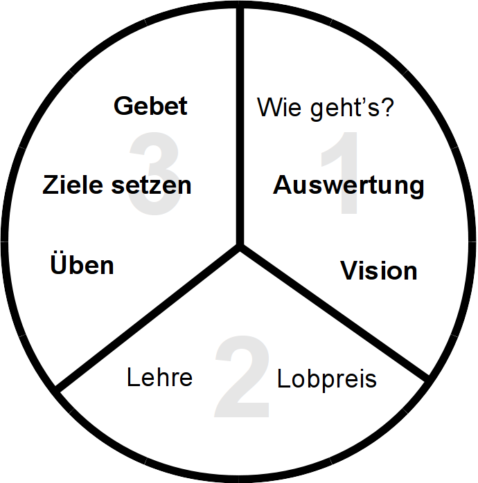

<h1>Der Drei-Drittel-Prozess</h1>
<div style="margin-right:25px;float:left">
</div>
<p><i>Für mehr Details, wie man dieses Diagramm einsetzen kann, siehe <a href="/Training_Meeting_Outline/de">Ablauf der Trainings-Treffen</a></i>
</p>
<ol><li>Wie geht's?</li>
<li><b>Auswertung</b></li>
<li><b>Vision</b></li>
<li>Lobpreis</li>
<li>Lehre</li>
<li><b>Üben</b></li>
<li><b>Ziele setzen</b></li>
<li><b>Gebet</b></li></ol>
<p><br/>
</p><p><br/>
</p>